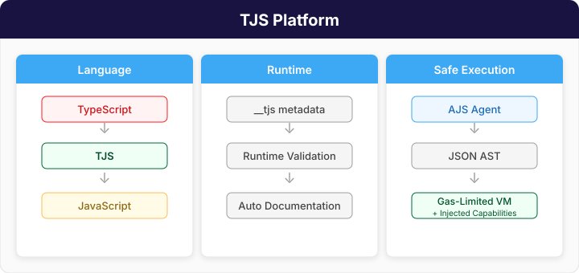
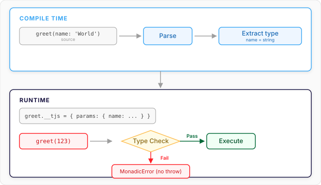
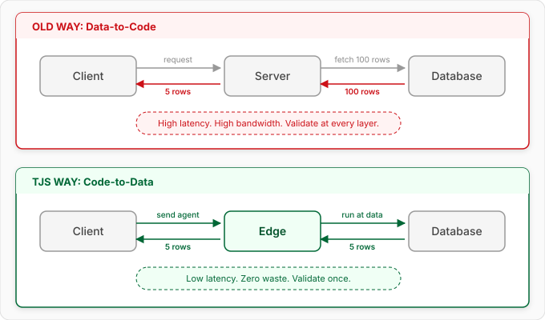

TJS Platform
playground | github | npm | discord
What is TJS?
TJS is a language. It's what JavaScript always promised, but never quite delivered. Indeed it's what Apple's Dylan promised and never delivered. Instead of "a lot of the power of Lisp", all the power of Lisp. Instead of C-like Syntax, actual JavaScript syntax. Instead of easy to learn but with weird corner cases, dangerous gotchas, and problems at scale, we fix the corner cases, remove the gotchas, and provide the tools that let you scale.
TJS is also a runtime. A runtime that remembers your function declarations and can check whether parameter types are what they ought to be. It can guarantee safety by default, and speed when it's needed (including inline WASM).
AJS is another language. It's a language for safe evaluation with injected capabilities and a gas limit. It's the language tjs allows you to Eval and use to create a SafeFunction. It also has its own VM and runtime to allow you to build universal endpoints. It's a language that's easy for agents to write and comprehend. It can be converted into an AST and run remotely.
TJS is also a toolchain. It transpiles its own source into JavaScript — the transpiler is written in TypeScript, and running it through its own TS→TJS→JS pipeline yields a bootstrapped transpiler whose output matches the native one exactly (src/use-cases/bootstrap.test.ts). That's a compiler that processes its own source, not (yet) a compiler written in its own language. It transpiles TypeScript into TJS and then into JS. It turns function definitions into runtime contracts, documentation, and simple tests. It uses types both as contracts and examples. It allows inline tests of private module internals that disappear at runtime. It compresses transpilation, linting, testing, and documentation generation into a single fast pass. As for bundling? It allows it but it targets an unbundled web.

The Problem
TypeScript is fragile. It pretends to be a superset of JavaScript, but it isn't. It pretends to be typesafe, but it isn't. Its Turing-complete type system is harder to reason about than the code it supposedly documents—and then it all disappears at runtime.
TypeScript is also difficult to transpile. Your browser can run entire full virtual machines in JavaScript, but most TypeScript playgrounds either fake transpilation by stripping type declarations or use a server backend to do the real work.
JavaScript is dangerous. eval() and Function() are so powerful they're forbidden almost everywhere—blocked by CSP in most production environments. The industry's answer? The Container Fallacy: shipping a 200MB Linux OS just to run a 1KB function safely. We ship buildings to deliver letters.
Security is a mess. Every layer validates. Gateway validates. Auth validates. Business logic validates. Database validates. We spend 90% of our time building pipelines to move data to code, re-checking it at every hop.
What If?
What if your language were:
- Honest — types that actually exist at runtime, not fiction that evaporates
- Safe — a gas-metered VM where infinite loops are impossible, no container required
- Mobile — logic that travels to data, not oceans of data dragged to logic
- Unified — one source of truth, not TypeScript interfaces plus Zod schemas plus JSDoc
That's what TJS Platform provides: TJS for writing your infrastructure, and AJS for shipping logic that runs anywhere.
TJS — Types That Survive
Write typed JavaScript where the type is an example. No split-brain validation.
// TJS: The type is an example AND a test
function greet(name: 'World'): 'Hello, World!' {
return `Hello, ${name}!`
}
// At transpile time: greet('World') is called and checked against 'Hello, World!'
// Runtime: The type becomes a contract
console.log(greet.__tjs.params) // { name: { type: 'string', example: 'World', required: true } }
// Safety: Errors are values, not crashes
const result = greet(123) // MonadicError: Expected string for 'greet.name', got number
Why it matters:
- One source of truth — no more TS interfaces + Zod schemas + JSDoc comments
- Types as examples —
name: 'Alice'means "required string, like 'Alice'" - Runtime metadata —
__tjsenables reflection, autocomplete, documentation from live objects - Monadic errors — type failures return values, never throw
- Zero build step — transpiles in the browser, no webpack/Vite/Babel
- The compiler is the client — TJS transpiles itself and TypeScript entirely client-side

AJS — Code That Travels
Write logic that compiles to JSON and runs in a gas-limited sandbox. Send agents to data instead of shipping data to code.
const agent = ajs`
function research(topic: 'AI') {
let data = httpFetch({ url: '/search?q=' + topic })
let summary = llmPredict({ prompt: 'Summarize: ' + data })
return { topic, summary }
}
`
// Run it safely—no Docker required
const result = await vm.run(
agent,
{ topic: 'Agents' },
{
fuel: 500, // Strict CPU budget
capabilities: { fetch: http }, // Allow ONLY http, block everything else
}
)
Why it matters:
- Safe eval — run untrusted code without containers
- Code is JSON — store in databases, diff, version, transmit
- Fuel metering — every operation costs gas, infinite loops impossible
- Capability-based — zero I/O by default, grant only what's needed
- LLM-native — simple enough for small models to generate correctly
The Architecture Shift

The agent carries its own validation. The server grants capabilities. Caching happens automatically because the query is the code.
Safe Eval
eval() that is safe to hand untrusted code: fuel-metered so it always halts, and with no way
out except the capabilities you give it.
import { Eval } from 'tjs-lang/eval'
const { result } = await Eval({
code: 'items.filter(x => x.price < budget)',
context: { items: [{ price: 40 }, { price: 250 }], budget: 100 },
fuel: 1000,
})
console.log(result) // → [{"price":40}]
No CSP violations, no infinite loops, no access to anything you did not grant. Safe
Eval covers SafeFunction, network access through an injected
fetch, and exactly what the sandbox guarantees and what it does not.

Quick Start
npm install tjs-lang
Run an Agent
import { ajs, AgentVM } from 'tjs-lang'
const agent = ajs`
function double(value: 21) {
return { result: value * 2 }
}
`
const vm = new AgentVM()
const { result } = await vm.run(agent, { value: 21 })
console.log(result) // { result: 42 }
Write Typed Code
import { tjs } from 'tjs-lang'
const { code, metadata } = tjs`
function add(a: 0, b: 0): 0 {
return a + b
}
`
// code: JavaScript with __tjs metadata attached
// metadata: { add: { params: { a: { type: 'number', example: 0 }, b: { type: 'number', example: 0 } }, returns: { type: 'number' } } }
Try the Playground
Since TJS compiles itself, the playground is the full engine running entirely in your browser.
At a Glance
| TypeScript | TJS | AJS | |
|---|---|---|---|
| Purpose | Write your platform | Write your platform | Write your agents |
| Trust level | Your code | Your code | Anyone's code |
| Compiles to | JavaScript + .d.ts |
JavaScript (with runtime checks + introspection) | JSON AST |
| Runs in | Browser, Node, Bun | Browser, Node, Bun | Sandboxed VM |
| Types | Static only (erased at runtime) | Examples → runtime validation | Schemas for I/O |
| Errors | Exceptions | Monadic (values, not exceptions) | Monadic |
| Build step | tsc → JS + .d.ts |
Runs tests, builds docs, produces JS | None |
Note: TJS can transpile TypeScript into JS (via TJS) using
tjs convert, giving your existing TS code runtime type checks and introspection. You can even add inline tests using/*test ...*/comments that run automatically during the build.
Bundle Size
The cost of "safe eval"—compare to a 200MB Docker image. Measured at v0.14.0; each row is a standalone entry point, not an increment (import only what you need):
| Entry point | Bundle | Size | Gzipped |
|---|---|---|---|
tjs-lang/vm (VM only) |
tjs-vm.js | 223 KB | 68 KB |
tjs-lang/eval (safe eval) |
tjs-eval.js | 105 KB | 34 KB |
tjs-lang/batteries |
tjs-batteries.js | 11 KB | 4 KB |
tjs-lang/lang (transpiler) |
tjs-lang.js | 324 KB | 104 KB |
tjs-lang (full, TS support) |
index.js | 417 KB | 135 KB |
The transpiler grew ~6% in 0.14.0 — Type examples are now read for what they mean
(floats, unions, recursive references) and checked by a real fixed-point solver. The VM and
eval bundles got 23% and 40% smaller in 0.13.10, and not by optimising anything: giving AJS its own parser (parseAgentSource, see the CHANGELOG) meant the VM
stopped bundling ~26 TJS-only source transforms it had no business running. Less code on the
path that compiles untrusted input is a security property before it is a size one.
These numbers are verified by
src/bundle-size.test.ts, which re-measures the built bundles and fails if this table drifts — so they can go stale by at most one release.
Dependencies: acorn + acorn-walk/acorn-loose (JS parsing), tosijs-schema
(validation). All have zero transitive dependencies.
Documentation
- TJS Language Guide — Types, syntax, runtime
- AJS Runtime Guide — VM, atoms, capabilities
- WASM Quick Start — Build WASM-accelerated libraries with zero toolchain setup
- Architecture Deep Dive — How it all fits together
- Playground — Try it now
Installation
# npm
npm install tjs-lang
# bun
bun add tjs-lang
# pnpm
pnpm add tjs-lang
If you re-export a tjs-lang type from your own package
A trap worth knowing about before you hit it — reported from tosijs-ui
(#28).
import type is erased from emitted JavaScript but not from emitted .d.ts. So
if your package does the natural thing:
import type { AutocompleteConfig } from 'tjs-lang/editors/codemirror'
export type MyConfig = AutocompleteConfig
your published .d.ts still contains that import — and every consumer of your package now
needs tjs-lang installed to typecheck, even if they never touch TJS:
error TS2307: Cannot find module 'tjs-lang/editors/codemirror'
Declaring tjs-lang as an optional peer does not help. Optionality governs installation,
not type resolution; tsc still has to find the module to check the declaration.
Three ways out, roughly in order of preference:
- Do not re-export the type. Structurally duplicate what you need in your own declaration. Verbose, but your public API stops depending on ours.
- Make the dependency real — a regular
dependency, not an optional peer — if your package genuinely requires tjs-lang at type level. - Inline the shape at the boundary (
export type MyConfig = { … }) so the import never reaches your.d.ts.
This is not specific to tjs-lang; it catches any package that re-exports a type from an optional peer. It is documented here because we ship the types that invite it.
License
Apache 2.0